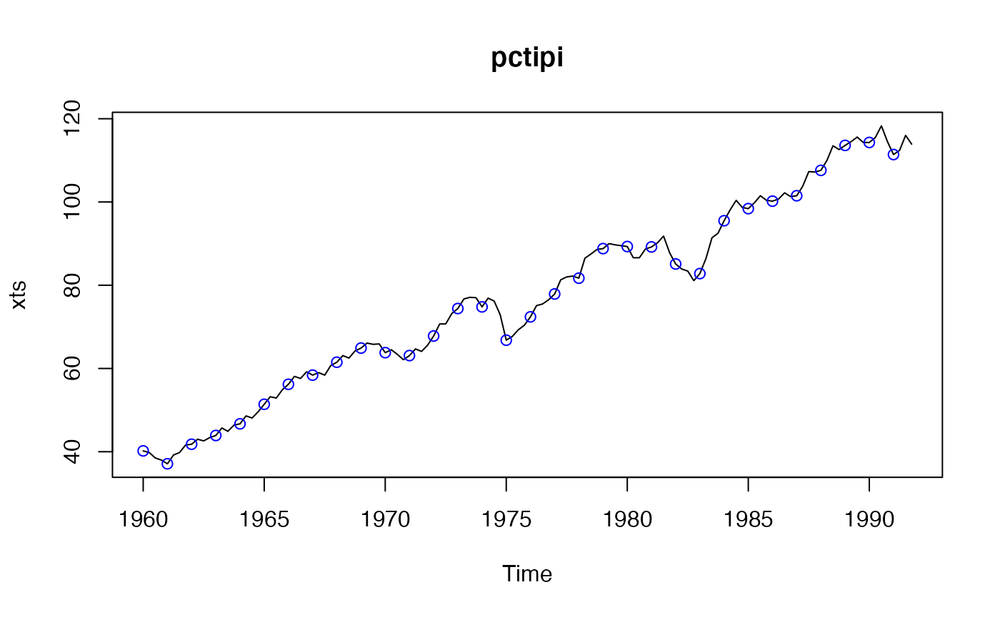
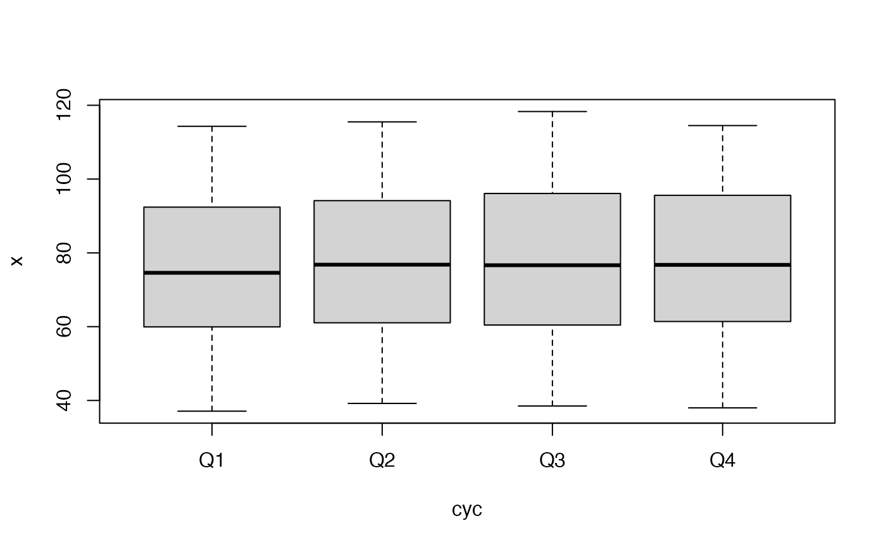

Importing and manipulating periodic time series data
This vignette is part of package pcts, version 0.15.2.9000.
Georgi N. Boshnakov
2022-01-19
Source:vignettes/pcts_data.Rmd
pcts_data.RmdThe intended mode of work with time series in package pcts() is that users create periodic time series using function pcts() and then operate on the object created by it. pcts() accepts base R data objects, such as “ts”, “mts”, “numeric”, “matrix”, “data. frame”, as well as some time series classes with regular time from other packages, including “zooreg” (other classes can be added if required).
Package pcts provides two native classes for periodic time series: “PeriodicTS” and “PeriodicMTS” for univariate and multivariate time series, respectively. There are also some classes serving as wrappers for the base “ts” and “mts” classes and some classes from other packages, such as “zoo”, if the original classes need to be preserved.
When supplied with a time series object, pcts() gets the time information from it. For example, AirPassengers is a monthly time series starting on 1949, 1 from base R, so it is converted to a periodic time series with a monthly cycle and the same start time:
ap <- pcts(AirPassengers)
ap
#> An object of class "PeriodicTS"
#> Slot "cycle": Start: 1949 January
#> Cycle: MonthYearCycle
#> Number of seasons: 12
#>
#> Jan Feb Mar Apr May Jun Jul Aug Sep Oct Nov Dec
#> Y1949 112 118 132 129 121 135 148 148 136 119 104 118
#> Y1950 115 126 141 135 125 149 170 170 158 133 114 140
#> Y1951 145 150 178 163 172 178 199 199 184 162 146 166
#> Y1952 171 180 193 181 183 218 230 242 209 191 172 194
#> Y1953 196 196 236 235 229 243 264 272 237 211 180 201
#> Y1954 204 188 235 227 234 264 302 293 259 229 203 229
#> Y1955 242 233 267 269 270 315 364 347 312 274 237 278
#> Y1956 284 277 317 313 318 374 413 405 355 306 271 306
#> Y1957 315 301 356 348 355 422 465 467 404 347 305 336
#> Y1958 340 318 362 348 363 435 491 505 404 359 310 337
#> Y1959 360 342 406 396 420 472 548 559 463 407 362 405
#> Y1960 417 391 419 461 472 535 622 606 508 461 390 432Get the data from Mar 1952 to Feb 1959:
window(ap, start = c(1952, 3), end = c(1959, 2))
#> An object of class "PeriodicTS"
#> Slot "cycle": Start: 1952 March
#> Cycle: MonthYearCycle
#> Number of seasons: 12
#>
#> Jan Feb Mar Apr May Jun Jul Aug Sep Oct Nov Dec
#> Y1952 193 181 183 218 230 242 209 191 172 194
#> Y1953 196 196 236 235 229 243 264 272 237 211 180 201
#> Y1954 204 188 235 227 234 264 302 293 259 229 203 229
#> Y1955 242 233 267 269 270 315 364 347 312 274 237 278
#> Y1956 284 277 317 313 318 374 413 405 355 306 271 306
#> Y1957 315 301 356 348 355 422 465 467 404 347 305 336
#> Y1958 340 318 362 348 363 435 491 505 404 359 310 337
#> Y1959 360 342Take the summer months only:
window(ap, seasons = 7:9)
#> An object of class "PeriodicTS"
#> Slot "cycle": Start: 1949 July
#> Cycle: PartialCycle
#> Number of seasons: 3
#>
#> Jul Aug Sep
#> Y1949 148 148 136
#> Y1950 170 170 158
#> Y1951 199 199 184
#> Y1952 230 242 209
#> Y1953 264 272 237
#> Y1954 302 293 259
#> Y1955 364 347 312
#> Y1956 413 405 355
#> Y1957 465 467 404
#> Y1958 491 505 404
#> Y1959 548 559 463
#> Y1960 622 606 508The dataset dataFranses1996 contains a multivariate quarterly time series, see ?dataFranses1996 for more information. The object has the standard R class "mts", so can be loaded using data() without loading pcts. Here is some information about it:
data(dataFranses1996)
class(dataFranses1996)
#> [1] "mts" "ts" "matrix"
dim(dataFranses1996) # c(148, 19)
#> [1] 148 19
colnames(dataFranses1996)
#> [1] "year" "USTotalIPI"
#> [3] "CanadaUnemployment" "GermanyGNP"
#> [5] "UKTotalInvestment" "SA_USTotalIPI"
#> [7] "SA_CanadaUnemployment" "SA_GermanyGNP"
#> [9] "UKGDP" "UKTotalConsumption"
#> [11] "UKNondurablesConsumption" "UKExport"
#> [13] "UKImport" "UKPublicInvestment"
#> [15] "UKWorkforce" "SwedenNondurablesConsumption"
#> [17] "SwedenDisposableIncome" "SA_SwedenNondurablesConsumption"
#> [19] "SA_SwedenDisposableIncome"It can be converted to periodic time series with
The Franses’ time series is quite large and for convenience in presentation we work with parts of it below.
Let’s take one of the time series:
tipi <- dataFranses1996[ , "USTotalIPI"]
plot(tipi)Convert tipi to PeriodicTS and remove NAs at the start and end:
pctipi <- pcts(tipi)
pctipi <- window(pctipi, start = availStart(pctipi), end = availEnd(pctipi))
plot(pctipi)
boxplot(pctipi)
Subset a “PeriodicMTS” (shorten the names to reduce clutter in plots):
“[” gives “PeriodicMTS” even with length one argument:
pcfr2to2 <- pcfr[2]
pcfr2to2a <- pcfr["USTotalIPI"] # sameUse “[[” or $ to get “PeriodicTS”
pcfr2 <- pcfr[[2]]
pcfr2a <- pcfr[["USTotalIPI"]] # same
pcfr2b <- pcfr$USTotalIPI # same
identical(pcfr2, pcfr2a) # TRUE
#> [1] TRUE
identical(pcfr2, pcfr2b) # TRUE
#> [1] TRUE
c1 <- cycle(pcfr)
head(c1, 8)
#> An object of class "PeriodicTS"
#> Slot "cycle": Start: 1955 Quarter_1
#> Cycle: QuarterYearCycle
#> Number of seasons: 4
#>
#> Q1 Q2 Q3 Q4
#> Y1955 1 2 3 4
#> Y1956 1 2 3 4
frequency(pcfr)
#> [1] 4